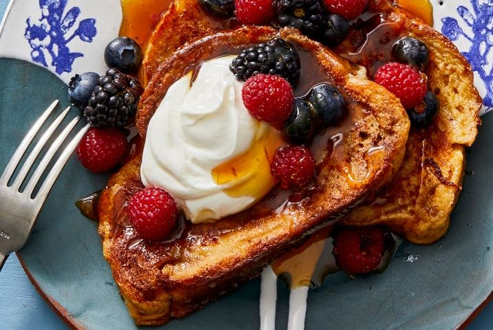

Quick and Easy Breakfast Recipe to Start Your Day Off Right
These simple breakfast recipes are the perfect way to kick off your morning
_____________________________________________________________________
(1)
Turkish shakshuka for breakfast

⌛ CooK Time : 10min
Ingredients :
- A spoonful of olive oil
- A spoonful of olive oil
- Paprika (half a teaspoon)
- 2 eggs
- 1 finely chopped capsicum
- 1 tomato, finely chopped, 200 gr
- 1 medium-sized onion, finely chopped
- 2 minced garlic cloves
- Chopped parsley to taste
lnstructions:
- Preheat the oven to 200°C
- Heat the olive oil in a frying pan over medium heat. Add onions and garlic and stir until wilted.
- Add red hot pepper, paprika and turkey pepper. Stir the mixture for a minute
- Add the tomatoes. Boil the mixture for 5 minutes
- Break the eggs over the mixture. Insert the pan into the oven for 5 minutes, until the eggs are cooked
- Remove the pan from the oven. Garnish with parsley and serve hot shakshuka. health!
(2)
French Toast

⌛ CooK Time : 20min
Ingredients :
- 6 large eggs
- 1 1/2 c. whole milk
- 1 1/2 tsp. ground cinnamon
- 1 1/2 tsp. pure vanilla extract
- 8 1-inch-thick slices challah bread
- 4 tbsp. unsalted butter
- Yogurt, berries, and pure maple syrup or honey, for serving
Instructions :
- In large, shallow bowl, whisk together eggs, milk, cinnamon, and vanilla.
- Working in batches, place 2 bread slices in egg mixture and let soak 2 minutes. Flip and soak 1 minute more (both sides of bread should be totally coated in mixture).
- Meanwhile, heat 1 tablespoon butter in large nonstick skillet on medium-low. Once melted, add soaked bread and cook until golden brown, 1 to 3 minutes per side; transfer to wire rack. While toast is cooking, soak next batch of challah slices.
- Repeat with remaining butter and bread. Serve topped with yogurt, berries, and syrup or honey if desired.
(3)
Turkish tea with pomegranate
⌛ CooK Time : 20min
Ingredients :
- 2 cups of pomegranate seeds
- 1 cup of sugar
- 5 cups of ready-made Turkish tea
Instructions :
- In the lower part of the jug, put water and bring it to a boil over low heat.
- At the top of the fridge put the tea
- - Put boiling water in the upper part of the jug on the fire for 15 minutes.Add a little water to thebottom jug,then pour it into glasses